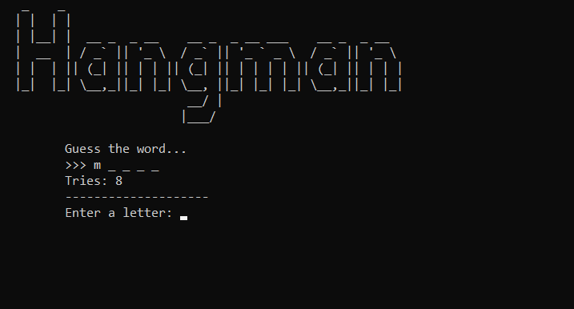

Κρεμάλα

Το κλασσικό παιχνίδι της κρεμάλας γραμμένο σε C.
Hangman
Calendar
Pizza Comparator
Library Manager
Line Drawing Algorithm
Resistors Game
My First Portfolio
#ΣχέδιοAthinaOut
Snake
Our Encryption
Movie Manager
Password Manager
Κάτι που με την Python μπορεί να γίνει σε 3 γραμμές κώδικα το έκανα με την C σε 300. Τυπώνει μήνα και ολόκληρο χρόνο και μπορει να βρεί μια συγκεκριμένη μέρα.
Το πρόγραμμα φτιάχτηκε μετα απο hangover και φαίνεται. Δίνεις δεδομένα και υπολογίζει την πίτσα που συμφέρει (ελπίζω). Ειναι φτιαγμένο στη C.
Ένα πρόγραμμα διαχείρισης βιβλιοθήκης, φτιαγμένο σε Java.
Λειτουργεί με και χωρίς GUI και έχει πολλά χαρακτηριστικά και
λειτουργίες. Επίσης, αυτή ήταν η πρώτη μου προσπάθεια να φτιάξω
ένα GUI χρησιμοποιώντας το Java Swing.
Eφαρμογή του αλγορίθμου του Bresenham, χρησιμοποιώντας το
Processing
σε Java.
Ο αλγόριθμος του Bresenham είναι ένας αλγόριθμος
σχεδίασης γραμμών που καθορίζει τα σημεία ενός n-διάστατου
ράστερ που πρέπει να επιλεγούν για να σχηματίσουν μια προσέγγιση
μιας ευθείας γραμμής μεταξύ δύο σημείων. Χρησιμοποιείται συνήθως
για τη σχεδίαση πρωταρχικών γραμμών σε μια εικόνα bitmap (π.χ.
σε μια οθόνη υπολογιστή), καθώς χρησιμοποιεί μόνο ακέραια
πρόσθεση, αφαίρεση και μετατόπιση bit. Είναι ένας αλγόριθμος
αυξητικού σφάλματος και ένας από τους πρώτους αλγορίθμους που
αναπτύχθηκαν στον τομέα των γραφικών υπολογιστών.
Ένα παιχνίδι, φτιαγμένο σε Java, βασισμένο στο σύστημα χρωματικής κωδικοποίησης των αντιστάσεων. Βοηθάει επίσης στην εξάσκηση και αυτός είναι ο κύριος λόγος που δημιουργήθηκε. Σύντομα προβλέπεται η δημιουργία ενός GUI.
Αυτή η στατική ιστοσελίδα δημιουργήθηκε μέσα σε 2-3 ώρες με HTML5 και CSS3. Σκοπός της ήταν να ενημερώσει για την τεταμένη κατάσταση στο πανεπιστήμιό μου. Το domain και το hosting αυτής της ιστοσελίδας έχει αναλάβει ένας συμφοιτητής μου. Εδώ είναι το Github Repository του.
Ένα ομαδικό πρότζεκτ με τους:
Συνδυάζει διάφορες τεχνικές κρυπτογράφησης (πχ Caesar's cypher)
αλλά και hashing.
Είναι γραμμένο σε C.
Ένα ομαδικό πρότζεκτ με τους:
Το πρότζεκτ ξεκίνησε τον Οκτώβριο του 2022 και είναι το δυσκολότερο που έχουμε επιχειρήσει. Συνδυάζει API, βάσεις δεδομένων, και GUI πράγματα που πρίν το πρότζεκτ μας ήταν τελείως άγνωστα.